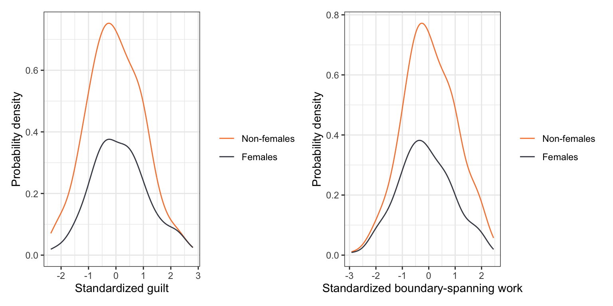
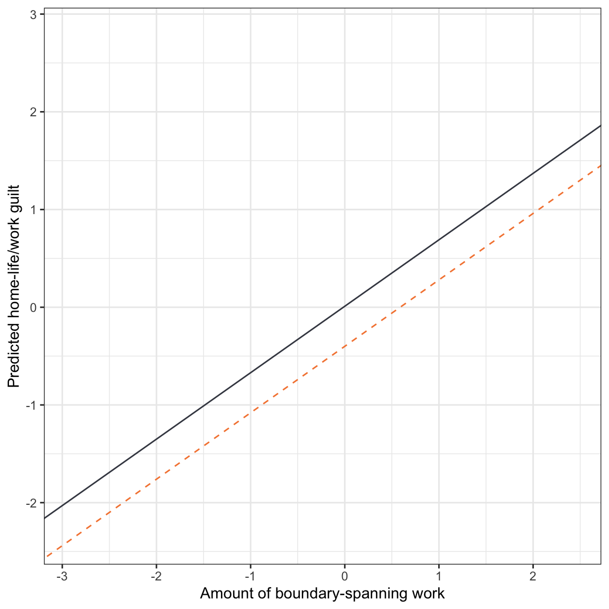
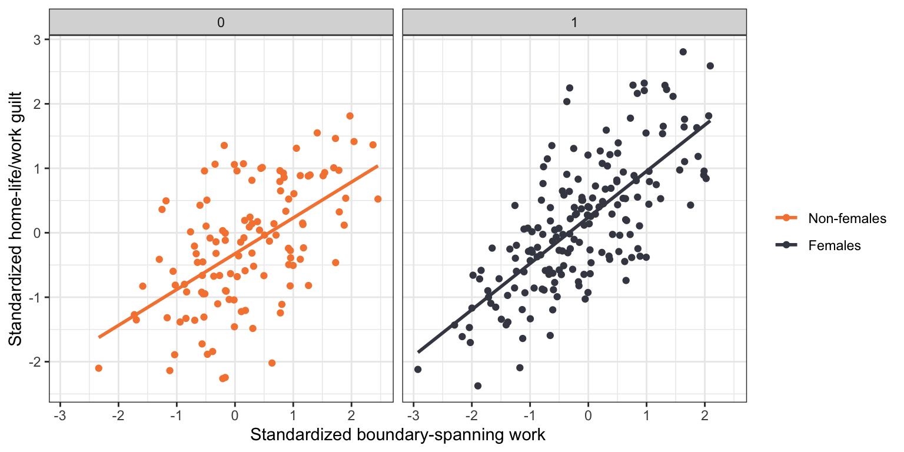
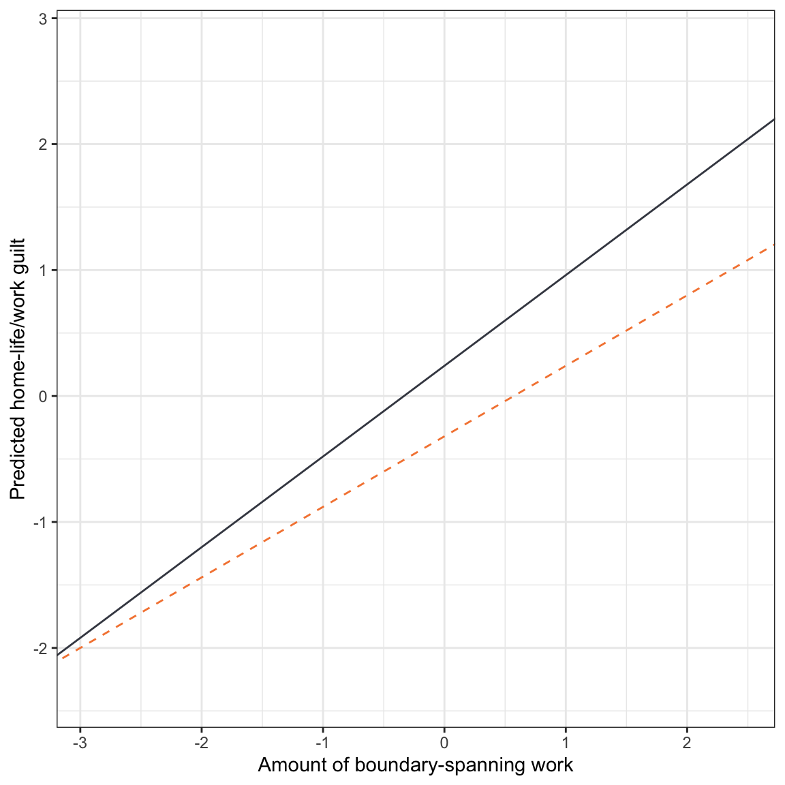
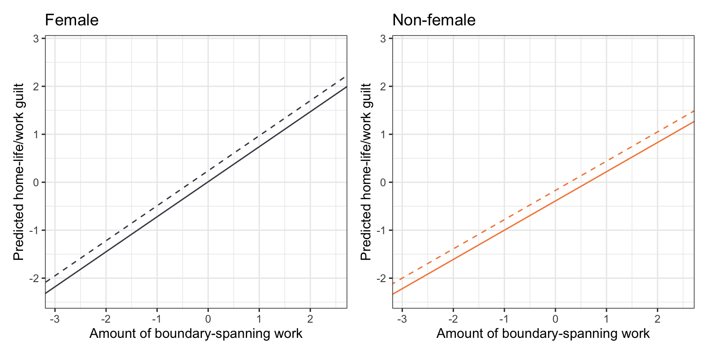
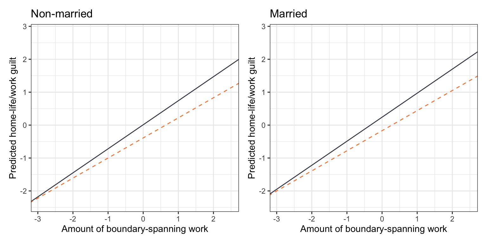
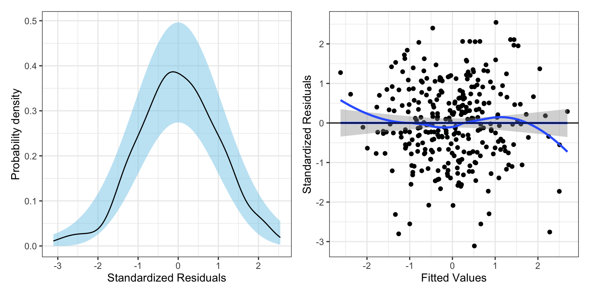
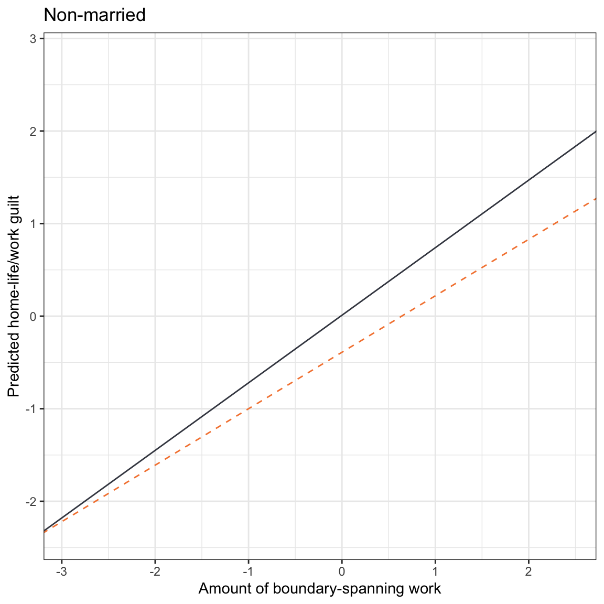

# Load libraries
library(broom)
library(corrr)
library(educate)
library(ggridges)
library(tidyverse)
# Read in data
work = read_csv(file = "https://raw.githubusercontent.com/zief0002/modeling/main/data/work-demands.csv")
# View data
work16 Introduction to Interaction Effects
In this chapter, you will learn about how to include and interpret interaction effects in the regression model. To do so, we will use the work-demands.csv data to examine predictors of guilt about home-life/work balance; see the data codebook). In particular we will evaluate whether there is an effect of boundary-spanning work (work-related matters outside normal work hours) on guilt and whether that effect differs by gender.
To begin, we will load several libraries and import the data into an object called work.
16.1 Data Exploration
To begin, as always, we would plot the marginal distributions of guilt (guilt) and boundary-spanning work (bound_span_work). Since we also are interested in potential gender differences, we will also examine these distributions conditioned on the female predictor. Below only the syntax and plots for the conditional distributions are shown. In the syntax, the factor() function is used to treat female as a categorical variable within the ggplot() aesthetic mapping.
# Density plot of guilt conditioned on female
p1 = ggplot(data = work, aes(x = guilt, color = factor(female))) +
stat_density(geom = "line") +
theme_bw() +
scale_color_manual(
name = "",
values = c("#F5853F", "#424651"),
labels = c("Non-females", "Females")
) +
xlab("Standardized guilt") +
ylab("Probability density")
# Density plot of boundary-spanning work conditioned on female
p2 = ggplot(data = work, aes(x = bound_span_work, color = factor(female))) +
stat_density(geom = "line") +
theme_bw() +
scale_color_manual(
name = "",
values = c("#F5853F", "#424651"),
labels = c("Non-females", "Females")
) +
xlab("Standardized boundary-spanning work") +
ylab("Probability density")
# Layout plots
p1 | p2
# Compute summary statistics
work |>
group_by(female) |>
summarize(
M_guilt = mean(guilt),
SD_guilt = sd(guilt),
M_bound = mean(bound_span_work),
SD_bound = sd(bound_span_work),
N = n()
)
The distribution of home-life/work related guilt is unimodal and relatively symmetric for both females and non-females. The mean guilt for females is higher (by 0.35 standard deviations) than that for non-females. The female distribution also has slightly more variation than the distribution of non-females. This pattern is similar for the distributions of boundary-spanning work except that females experience less boundary-spanning work on average, but also have more variation than their non-female peers.
We will also examine the correlation matrix.
work |>
correlate() |>
fashion(decimals = 2)The correlations suggest that:
- Employees who experience more boundary-spanning work tend to experience more home-life/work guilt.
- Female employees tend to experience more home-life/work guilt than females.
- Employees with higher degrees of job authority tend to experience less home-life/work guilt,
- Married employees tend to experience more home-life/work guilt than their non-married peers.
Furthermore,
- Female employees tend to experience less boundary-spanning work, have less job authority, and are more likely to be married than their male peers.
- There does not seem to be any relationship between being married and job authority.
16.2 Main-Effects Models
We will begin the regression analysis by exploring there is an effect of boundary-spanning work on feelings of guilt about home-life/work balance. We will also control for gender in examining this effect as previous literature has suggested that culturally, men and women “continue to encounter different role meanings and obligations associated with culturally embedded ideologies about work and family life” (Glavin et al., 2011, p. 46). Moreover, we will also fit a model controlling for differences in authority and whether or not an employee is married, as both of these covariates may explain differences in feelings of guilt about home-life/work balance.
# Fit models
lm.a = lm(guilt ~ 1 + bound_span_work, data = work)
lm.b = lm(guilt ~ 1 + bound_span_work + female, data = work)
lm.c = lm(guilt ~ 1 + bound_span_work + female + authority + married, data = work)| Model A | Model B | Model C | |
|---|---|---|---|
| Boundary-spanning work |
0.61 [0.52, 0.70] |
0.66 [0.57, 0.74] |
0.68 [0.63, 0.73] |
| Female |
0.58 [0.40, 0.75] |
0.41 [0.31, 0.50] |
|
| Job authority |
-0.53 [-0.57, -0.49] |
||
| Married |
0.23 [0.12, 0.33] |
||
| Constant |
0.00 [-0.09, 0.09] |
-0.35 [-0.48, -0.21] |
0.04 [-0.07, 0.14] |
| R2 | 0.371 | 0.449 | 0.836 |
| RMSE | 0.794 | 0.745 | 0.408 |
| Note: Female and Married are dummy-coded indicator variables indicating gender and marital status, respectively. | |||
Based on Model A, there is a positive relationship between boundary-spanning work and home-life/work guilt. In Model B, we find that this relationship persists, and is of larger magnitude, after accounting for differences in gender. We also find that females have more home-life/work guilt than non-females, controlling for differences in the amount of boundary-spanning work. The results from Model C indicates that the relationship between boundary-spanning work and home-life/work guilt still persists, even after accounting for differences in gender, job authority and marital status. This model also suggests that after accounting for differences in boundary-spanning work, job authority and marital status, females continue to have more home-life/work guilt than non-females.
Visually, we can display the effects of boundary-spanning work and gender (from Model C) by plotting the fitted partial regression lines. To do so, we will partial out job authority by setting it to its mean value of 0.83. We will also partial out marital status by setting its value to 0 (non-married).
\[ \begin{split} \mathbf{Females:~} \hat{\mathrm{Guilt}} &= 0.04 + 0.68(\mathrm{Boundary\mbox{-}spanning~work}) + 0.41(1) - 0.53(0.83) + 0.23(0) \\[2ex] &= 0.01 + 0.68(\mathrm{Boundary\mbox{-}spanning~work}) \\[4ex] \mathbf{Non\mbox{-}Females:~} \hat{\mathrm{Guilt}} &= 0.04 + 0.68(\mathrm{Boundary\mbox{-}spanning~work}) + 0.41(0) - 0.53(0.83) + 0.23(0) \\[2ex] &= -0.40 + 0.68(\mathrm{Boundary\mbox{-}spanning~work}) \end{split} \]
ggplot(data = work, aes(x = bound_span_work, y = guilt)) +
geom_point(alpha = 0) +
theme_bw() +
xlab("Amount of boundary-spanning work") +
ylab("Predicted home-life/work guilt") +
geom_abline(intercept = 0.01, slope = 0.68, linetype = "solid", color = "#424651") +
geom_abline(intercept = -0.40, slope = 0.68, linetype = "dashed", color = "#f5853f")
This display helps us see that the effect of boundary-spanning work (slopes of the lines) is THE SAME for both females and non-females, and is 0.68. We also see that females report more guilt than males, and that this difference in guilt is THE SAME regardless of how much boundary-spanning work is experienced.
Remember, this type of model where the effect of a predictor is THE SAME for each level of another predictor is referred to as a main-effects model. All the models we have fitted in the course thus far have been main-effects models.
16.3 Statistical Interactions: Differential Effects for Females and Non-Females
One important question for researchers studying the effect of boundary-spanning work on home-life/work guilt is whether the effect of boundary-spanning work on guilt is actually the same for females and non-females. Examining the empirical data suggests that there might be a difference in this effect by gender. The scatterplots suggests that the effect of boundary-spanning work on home-life/work guilt is positive for females and non-females, but that the magnitude (slope) of this relationship may be higher for females. In other words, increased amounts of boundary-spanning work is associated with more guilt for females than for non-females.
ggplot(data = work, aes(x = bound_span_work, y = guilt, color = factor(female))) +
geom_point() +
geom_smooth(method = "lm", se = FALSE) +
theme_bw() +
scale_color_manual(
name = "",
values = c("#F5853F", "#424651"),
labels = c("Non-females", "Females")
) +
xlab("Standardized boundary-spanning work") +
ylab("Standardized home-life/work guilt") +
facet_wrap(~female)
Differential effects of boundary-spanning work for females and non-females on home-life/work guilt imply that the slopes of the regression lines for females and non-females are not equal (i.e., the fitted regression lines are not parallel). This is in stark contrast to the main-effects model which implies parallel regression lines, or equal effects of boundary-spanning work for females and non-females. In statistical terms we describe differential effects as interaction effects. We would say there is an interaction effect between boundary-spanning work and gender on home-life/work guilt.
16.3.1 Testing for an Interaction Effect
The inferential question is whether the interaction effect that we are seeing in the empirical data is “real”, or whether it is an artifact of sampling error. To examine this we need a way to test whether the slopes of the two regression lines are equal. To do this, we create another predictor that is the product of the two predictors we believe interact and include that product term in the regression model along with the original predictors we used to create it (i.e., also include the constituent main-effects). In our example, we multiply the dummy-coded female predictor by the boundary-spanning work predictor to create the interaction term. Then we fit a model that includes the dummy-coded female predictor, the boundary-spanning work predictor, and the newly created interaction term.
# Create interaction term
work = work |>
mutate(
bound_work_female = bound_span_work * female
)
# View data
work# Fit interaction model
lm.d = lm(guilt ~ 1 + bound_span_work + female + bound_work_female, data = work)
# Coefficient-level output
tidy(lm.d)The fitted equation is:
\[ \hat{\mathrm{Guilt}}_i = -0.32 + 0.56(\mathrm{Boundary\mbox{-}spanning~work}_i) + 0.56(\mathrm{Female}_i) + 0.16(\mathrm{Boundary\mbox{-}spanning~work}_i)(\mathrm{Female}_i) \]
If we substitute in the appropriate dummy-coding we can obtain the fitted equations for females and non-females.
Female Fitted Equation
\[ \begin{split} \hat{\mathrm{Guilt}}_i &= -0.32 + 0.56(\mathrm{Boundary\mbox{-}spanning~work}_i) + 0.56(1) + 0.16(\mathrm{Boundary\mbox{-}spanning~work}_i)(1) \\[2ex] &= 0.24 + 0.72(\mathrm{Boundary\mbox{-}spanning~work}_i) \end{split} \]
Non-female Fitted Equation
\[ \begin{split} \hat{\mathrm{Guilt}}_i &= -0.32 + 0.56(\mathrm{Boundary\mbox{-}spanning~work}_i) + 0.56(0) + 0.16(\mathrm{Boundary\mbox{-}spanning~work}_i)(0) \\[2ex] &= -0.32 + 0.56(\mathrm{Boundary\mbox{-}spanning~work}_i) \end{split} \]
Notice that the inclusion of the interaction term allows the slopes in the two fitted equations to be different. Moreover, the female slope of \(B=0.72\) is 0.16 units higher than the non-female slope of \(B=0.56\). This difference in slopes is expressed by the estimated coefficient for the interaction term.
The hypothesis test associated with the interaction term in the tidy() output evaluates the null hypothesis that:
\[ H_0: \beta_{\mathrm{Interaction}} = 0 \]
This is a test of whether the slopes for females and non-females are the same; if the interaction term is 0, then the slopes are the same in the population. In our example, the inferential results suggest that there is some evidence that the empirical data may not be compatible with the hypothesis that the difference in slopes is 0; \(t(296)=1.78\), \(p=.076\). This suggests that the effect of boundary-spanning work on guilt for females may be different than that for non-females.
16.3.2 Mathematical Expression of the Interaction Model
In general, the interaction model (with two predictors) can be written as,
\[ \begin{split} Y_i = \beta_0 + \beta_1(X_{1i}) &+ \beta_2(X_{2i}) + \beta_3\left(X_{1i}\right)\left(X_{2i}\right) + \epsilon_i, \quad \mathrm{where}\\[2ex] & \epsilon_i \overset{i.i.d.}{\sim} \mathcal{N}\big(0,\sigma^2_{\epsilon}\big) \end{split} \]
First notice that if \(\beta_3\), the coefficient on the interaction term, is zero, this equation reduces to the equation for the main-effects model, namely
\[ \begin{split} Y_i = \beta_0 &+ \beta_1(X_{1i}) + \beta_2(X_{2i}) + \epsilon_i, \quad \mathrm{where}\\[2ex] & \epsilon_i \overset{i.i.d.}{\sim} \mathcal{N}\big(0,\sigma^2_{\epsilon}\big) \end{split} \]
Because of this, in practice, if the observed data are compatible with the null hypothesis that the coefficient for the interaction term is zero, it is common to drop the interaction term from the model, and re-fit the model using the main-effects model.
To further understand the terms in the interaction model, we will write out the interaction model using the context of our example. (For ease of writing, we will drop the part of the model that specifies the model’s assumptions.)
\[ \mathrm{Guilt}_i = \beta_0 + \beta_1(\mathrm{Boundary\mbox{-}spanning~work}_i) + \beta_2(\mathrm{Female}_i) + \beta_3(\mathrm{Boundary\mbox{-}spanning~work}_i)(\mathrm{Female}_i) + \epsilon_i \]
Since the predictor \(\mathrm{Female}_i\) is a dummy coded predictor (0 for non-females; 1 for females), we can use substitute those values into the model and write the regression model associated with non-females and that for females.
Regression Model for Non-females
\[ \begin{split} \mathrm{Guilt}_i &= \beta_0 + \beta_1(\mathrm{Boundary\mbox{-}spanning~work}_i) + \beta_2(0) + \beta_3(\mathrm{Boundary\mbox{-}spanning~work}_i)(0) + \epsilon_i \\[2ex] &= \beta_0 + \beta_1(\mathrm{Boundary\mbox{-}spanning~work}_i) + \epsilon_i \\ \end{split} \]
Regression Model for Females
\[ \begin{split} \mathrm{Guilt}_i &= \beta_0 + \beta_1(\mathrm{Boundary\mbox{-}spanning~work}_i) + \beta_2(1) + \beta_3(\mathrm{Boundary\mbox{-}spanning~work}_i)(1) + \epsilon_i \\[2ex] &= \beta_0 + \beta_1(\mathrm{Boundary\mbox{-}spanning~work}_i) + \beta_2 + \beta_3(\mathrm{Boundary\mbox{-}spanning~work}_i) + \epsilon_i \\[2ex] &= \bigg[\beta_0 + \beta_2\bigg] + \bigg[\beta_1 + \beta_3\bigg](\mathrm{Boundary\mbox{-}spanning~work}_i) + \epsilon_i \\ \end{split} \]
We can use these equations to understand what each term in the interaction model represents:
- The intercept term from the interaction model (\(\beta_0\)) turns out to be the intercept term for the reference group (non-females in our example).
- The slope term associated with boundary-spanning work from the interaction model (\(\beta_1\)) turns out to be the effect of boundary-spanning work for the reference group (non-females in our example).
- The slope term associated with the dummy-coded female predictor from the interaction model (\(\beta_2\)) turns out to be the difference in intercept between the group coded 1 and the reference group (difference in the female and non-female intercepts in our example).
- The slope term associated with the interaction predictor from the interaction model (\(\beta_3\)) turns out to be the difference in slopes between the group coded 1 and the reference group (difference in the female and non-female slopes in our example).
16.3.3 Interpreting the Fitted Model’s Coefficients
Here we will use the interaction model we fitted earlier to understand how to interpret the different coefficients in the model. Recall that the fitted equation was,
\[ \hat{\mathrm{Guilt}}_i = -0.32 + 0.56(\mathrm{Boundary\mbox{-}spanning~work}_i) + 0.56(\mathrm{Female}_i) + 0.16(\mathrm{Boundary\mbox{-}spanning~work}_i)(\mathrm{Female}_i) \]
- The intercept term (\(\hat\beta_0=-0.32\)) indicates that non-females who experience an average amount of boundary-spanning work (boundary-spanning work = 0) have a guilt level of -0.32 standard deviations, on average.
- The slope term associated with boundary-spanning work (\(\hat\beta_1=0.56\)) indicates that, for non-females, each one-standard deviation difference in boundary-spanning work is associated with a 0.56-standard deviation difference in home-life/work guilt, on average.
- The slope term associated with the dummy-coded female predictor (\(\hat\beta_2=0.56\)) indicates that females who experience an average amount of boundary-spanning work (boundary-spanning work = 0) have a guilt level that is 0.56-standard deviations higher, on average, than non-females who experience an average amount of boundary-spanning work.
- The slope term associated with the interaction predictor (\(\hat\beta_3=0.16\)) indicates that, for females, the effect of boundary-spanning work on home-life/work guilt is 0.16-units higher, on average, than the effect of boundary-spanning work on home-life/work guilt for non-females. In other words, for females, each one-standard deviation increase in boundary-spanning work is associated with a 0.72-standard deviation difference in home-life/work guilt, on average.
In general, the easiest way to determine how to interpret the coefficients is to actually compute the partial regression equations for both groups based on the fitted interaction equation like we did earlier. Then you can just interpret the intercept and slope terms for the groups independently.
16.3.4 Plotting the Fitted Equation for the Interaction Model
Almost always, plotting the fitted model is a good idea once you have fitted an interaction model. To do this we use geom_abline() to plot the non-female and female fitted lines.
ggplot(data = work, aes(x = bound_span_work, y = guilt)) +
geom_point(alpha = 0) +
theme_bw() +
xlab("Amount of boundary-spanning work") +
ylab("Predicted home-life/work guilt") +
geom_abline(intercept = 0.24, slope = 0.72, linetype = "solid", color = "#424651") +
geom_abline(intercept = -0.32, slope = 0.56, linetype = "dashed", color = "#f5853f")
In this plot, we can see some of the same effects we interpreted from the coefficients:
- Females have a higher intercept than non-females,
- The effect of boundary-spanning work for females is higher in magnitude than that for non-females.
The plot also allows us to see other things as well. For example,
- The lines do not cross at a boundary-spanning work value represented in the data. This implies that females are predicted to have more home-life/work guilt than non-females, on average, regardless of how much boundary-spanning work they experience. But, this differential diminishes for lower levels of boundary-spanning work.
In the social sciences sometimes this observed pattern of one group ALWAYS having a higher predicted level of the outcome within the range of X-values is referred to as an ordinal interaction. If the lines had crossed, that would imply that for some values of X, one group had higher predicted levels of the outcome, while for other values of X the other group had higher predicted levels of the outcome. This would be referred to as a disordinal interaction. It is generally better to show the plot and describe the effects for both groups rather than just stating that the interaction was ordinal or disordinal in nature.
16.4 Adding Covariates into the Model
Two important covariates for explaining the effect of boundary-spanning work on home-life/work guilt is an employee’s level of job authority and marital status. Like the main-effects models we have previously fitted, we can also control for effects in the interaction model. Here we include both covariates in the model to further examine whether there are differential effects of boundary-spanning work on guilt for males and females.
# Fit interaction model
lm.e = lm(guilt ~ 1 + bound_span_work + female + authority + married + bound_work_female, data = work)
# Coefficient-level output
tidy(lm.e)The fitted equation is,
\[ \begin{split} \hat{\mathrm{Guilt}}_i = &0.05 + 0.61(\mathrm{Boundary\mbox{-}spanning~work}_i) + 0.40(\mathrm{Female}_i) - 0.53(\mathrm{Authority}_i) + 0.23(\mathrm{Married}_i) + \\ &0.12(\mathrm{Boundary\mbox{-}spanning~work}_i)(\mathrm{Female}_i) \end{split} \]
To answer our research question, the coefficient that matters here is the interaction term. The inferential results suggest that after controlling for differences in level of job authority and marital status, there does seem to be a differential effect of boundary-spanning work by gender; \(t(294)=2.44\). \(p=0.015\). In practice, we would probably eschew any further coefficient interpretation, but for pedagogical purposes the interpretation of each coefficient is:
- The intercept term (\(\hat\beta_0=0.05\)) indicates that non-married, non-females with no job authority, who experience an average amount of boundary-spanning work (boundary-spanning work = 0), have a home-life/work guilt level of 0.05 standard deviations, on average.
- The slope term associated with boundary-spanning work (\(\hat\beta_1=0.61\)) indicates that, for non-females, each one-standard deviation difference in boundary-spanning work is associated with a 0.61-standard deviation difference in home-life/work guilt, on average, controlling for differences in amount of job authority and marital status.
- The slope term associated with the dummy-coded female predictor (\(\hat\beta_2=0.40\)) indicates that females who experience an average amount of boundary-spanning work have a home-life/work guilt level that is 0.40-standard deviations higher, on average, than non-females who experience an average amount of boundary-spanning work, controlling for differences in amount of job authority and marital status.
- The slope term associated with job authority (\(\hat\beta_3=-0.53\)) indicates that, controlling for differences in gender and amount of boundary-spanning work, each one-standard deviation difference in job authority is associated with a \(-0.53\)-standard deviation decrease in home-life/work guilt, on average.
- The slope term associated with the dummy-coded marital status predictor (\(\hat\beta_4=0.40\)) indicates that married employees have a home-life/work guilt level that is, on average, 0.40-standard deviations higher than their non-married peers, controlling for differences in the amount of boundary-spanning work and gender.
- The slope term associated with the interaction predictor (\(\hat\beta_5=0.12\)) indicates that for females, the effect of boundary-spanning work on home-life/work guilt is 0.16-units higher, on average, than the effect of boundary-spanning work on home-life/work guilt for non-females, controlling for differences in amount of job authority. In other words, for females, each one-standard deviation increase in boundary-spanning work is associated with a 0.73-standard deviation difference in home-life/work guilt, on average.
16.4.1 Plotting the Results of the Model
To further aid our understanding of the results from fitting the interaction model, we will create several plots to visualize the different effects of interest. In these plots, we will control for job authority by setting it to the mean value of 0.83. Since marital status is also a covariate, in practice you might also set it to a fixed value and partial it out of the plot. However, here we will show this effect so you can begin to visualize differences between main-effects and interaction effects. To do this we will need to obtain four different partial fitted equations and plot them.
Non-female, non-married
\[ \begin{split} \hat{\mathrm{Guilt}}_i &= 0.05 + 0.61(\mathrm{Boundary\mbox{-}spanning~work}_i) + 0.40(0) - 0.53(0.83) + 0.23(0) + 0.12(\mathrm{Boundary\mbox{-}spanning~work}_i)(0) \\[2ex] &= -0.39 + 0.61(\mathrm{Boundary\mbox{-}spanning~work}_i) \end{split} \]
Non-female, married
\[ \begin{split} \hat{\mathrm{Guilt}}_i &= 0.05 + 0.61(\mathrm{Boundary\mbox{-}spanning~work}_i) + 0.40(0) - 0.53(0.83) + 0.23(1) + 0.12(\mathrm{Boundary\mbox{-}spanning~work}_i)(0) \\[2ex] &= -0.17 + 0.61(\mathrm{Boundary\mbox{-}spanning~work}_i) \end{split} \]
Female, non-married
\[ \begin{split} \hat{\mathrm{Guilt}}_i &= 0.05 + 0.61(\mathrm{Boundary\mbox{-}spanning~work}_i) + 0.40(1) - 0.53(0.83) + 0.23(0) + 0.12(\mathrm{Boundary\mbox{-}spanning~work}_i)(1) \\[2ex] &= 0.01 + 0.73(\mathrm{Boundary\mbox{-}spanning~work}_i) \end{split} \]
Female, married
\[ \begin{split} \hat{\mathrm{Guilt}}_i &= 0.05 + 0.61(\mathrm{Boundary\mbox{-}spanning~work}_i) + 0.40(1) - 0.53(0.83) + 0.23(1) + 0.12(\mathrm{Boundary\mbox{-}spanning~work}_i)(1) \\[2ex] &= 0.24 + 0.73(\mathrm{Boundary\mbox{-}spanning~work}_i) \end{split} \]
# Female
p1 = ggplot(data = work, aes(x = bound_span_work, y = guilt)) +
geom_point(alpha = 0) +
theme_bw() +
xlab("Amount of boundary-spanning work") +
ylab("Predicted home-life/work guilt") +
geom_abline(intercept = 0.24, slope = 0.73, linetype = "dashed", color = "#424651") +
geom_abline(intercept = 0.01, slope = 0.73, linetype = "solid", color = "#424651") +
ggtitle("Female")
# Non-female
p2 = ggplot(data = work, aes(x = bound_span_work, y = guilt)) +
geom_point(alpha = 0) +
theme_bw() +
xlab("Amount of boundary-spanning work") +
ylab("Predicted home-life/work guilt") +
geom_abline(intercept = -0.39, slope = 0.61, linetype = "solid", color = "#f5853f") +
geom_abline(intercept = -0.17, slope = 0.61, linetype = "dashed", color = "#f5853f") +
ggtitle("Non-female")
# Layout plots
p1 | p2
Notice that the slope of the lines represents the effect of boundary-spanning work and that this differs by gender; the lines across gender are not parallel. Across marital status, however, the slopes are the same (at least within gender); parallel lines. This is because marital status was only included in the model as a main effect, whereas gender was included as part of an interaction effect.
We could also have facetted on marital status rather than gender. In this plot, the partial fitted lines within each panel of the plot are not parallel, but the set of lines are parallel across panels.
# Non-married
p1 = ggplot(data = work, aes(x = bound_span_work, y = guilt)) +
geom_point(alpha = 0) +
theme_bw() +
xlab("Amount of boundary-spanning work") +
ylab("Predicted home-life/work guilt") +
geom_abline(intercept = 0.01, slope = 0.73, linetype = "solid", color = "#424651") +
geom_abline(intercept = -0.39, slope = 0.61, linetype = "dashed", color = "#f5853f") +
ggtitle("Non-married")
# Married
p2 = ggplot(data = work, aes(x = bound_span_work, y = guilt)) +
geom_point(alpha = 0) +
theme_bw() +
xlab("Amount of boundary-spanning work") +
ylab("Predicted home-life/work guilt") +
geom_abline(intercept = 0.24, slope = 0.73, linetype = "solid", color = "#424651") +
geom_abline(intercept = -0.17, slope = 0.61, linetype = "dashed", color = "#f5853f") +
ggtitle("Married")
# Layout plots
p1 | p2
16.5 Evaluating the Distributional Assumptions
Just like main-effects models, we need to examine the distributional assumptions for any adopted interaction models. We do this in the exact same way we did for main effects models.
# Create augmented data
aug_e = augment(lm.e)
# Examine normality assumption
p1 = ggplot(data = aug_e, aes(x = .std.resid)) +
stat_density_confidence(model = "normal") +
stat_density(geom = "line") +
theme_bw() +
xlab("Standardized Residuals") +
ylab("Probability density")
# Examine other assumptions
p2 = ggplot(data = aug_e, aes(x = .fitted, y = .std.resid)) +
geom_point() +
geom_smooth(method = "lm", se = TRUE) +
geom_smooth(method = "loess", se = FALSE) +
geom_hline(yintercept = 0) +
theme_bw() +
xlab("Fitted Values") +
ylab("Standardized Residuals")
# Layout plots
p1 | p2
Based on the density plot of the standardized residuals, the normality assumption seems tenable. The scatterplot of the model’s standardized residuals versus its fitted values suggests that the average residual is close to zero for each fitted value, indicating that the linearity assumption seems tenable. The assumption of equal variances also seems tenable given this plot. Although not seen in the plot, there may be some question of independence. For example, some these employees may work in the same division, or have the same supervisor. As such, the amount of home-life/work guilt for these employees may be more related.
16.6 Two Interpretations of an Interaction Effect
There are always two interpretations of an interaction effect.
- The effect of \(X_1\) on \(Y\) differs depending on the level of \(X_2\).
- The effect of \(X_2\) on \(Y\) differs depending on the level of \(X_1\).
For example, in our example, we interpreted the interaction as:
- The effect of boundary-spanning work on guilt is different for females and non-females.
In the visual display, this interpretation focuses on the difference in slopes. We could also interpret the interaction as:
- The effect of gender on guilt is different depending on the amount of boundary-spanning work.
In the visual display, this interpretation focuses on the vertical distance between the lines. For example, focusing on the non-married panel of the plotted results from Model E, rather than focus on the slopes of the lines, look at the vertical distance between lines; this is the effect of gender.
# Non-married
ggplot(data = work, aes(x = bound_span_work, y = guilt)) +
geom_point(alpha = 0) +
theme_bw() +
xlab("Amount of boundary-spanning work") +
ylab("Predicted home-life/work guilt") +
geom_abline(intercept = 0.01, slope = 0.73, linetype = "solid", color = "#424651") +
geom_abline(intercept = -0.39, slope = 0.61, linetype = "dashed", color = "#f5853f") +
ggtitle("Non-married")
In this plot, the effect of gender differs depending on the amount of boundary-spanning work. For low amounts of boundary-spanning work the gender effect is small, and for higher amounts of boundary-spanning work the gender effect is larger. Regardless of the amount of boundary-spanning work, females have more home-life/work guilt than non-females (within our range of data).
Which interpretation of the interaction effect you use is up to you. Try them both. Although they both describe the same interaction, trying the different interpretations can sometimes lead to more information about or more natural ways of describing the effects.
Glavin, P., Schieman, S., & Reid, S. (2011). Boundary-spanning work demands and their consequences for guilt and psychological distress. Journal of Health and Social Behavior, 52(1), 43–57.